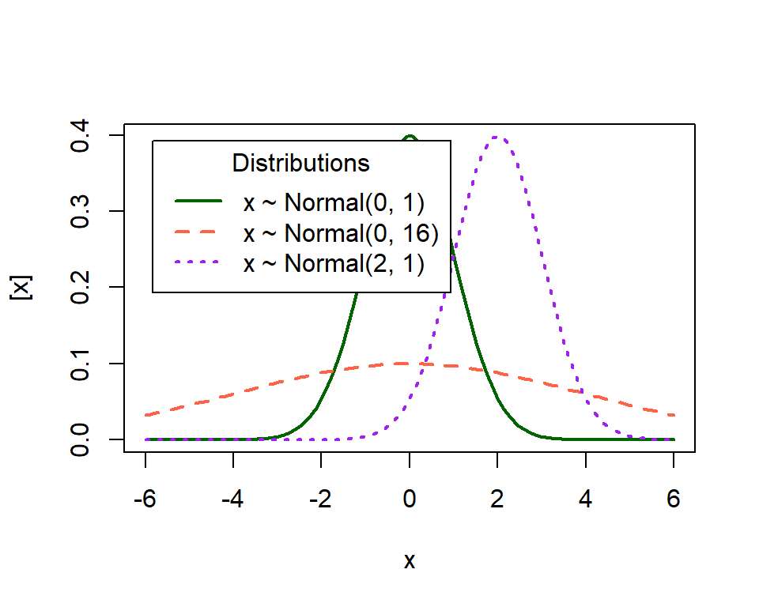
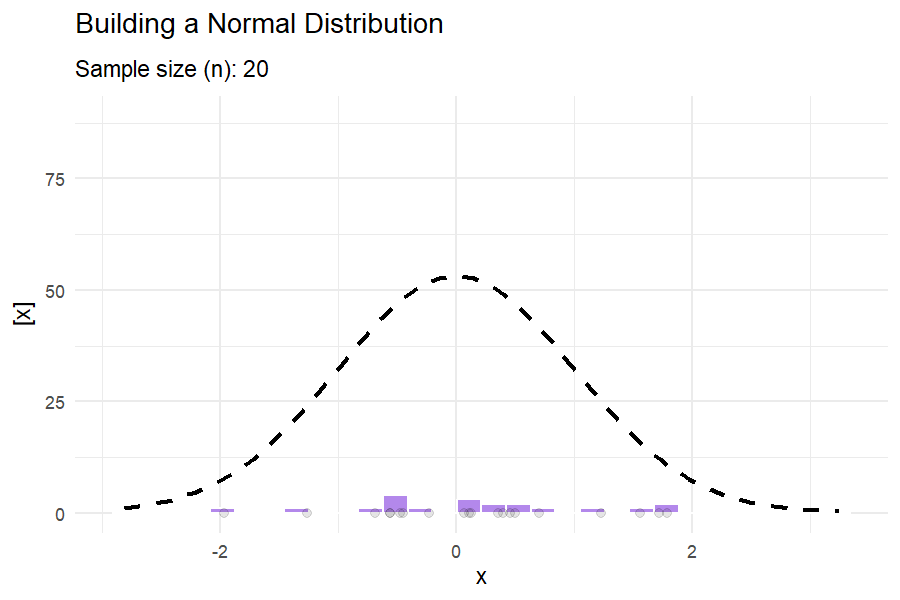
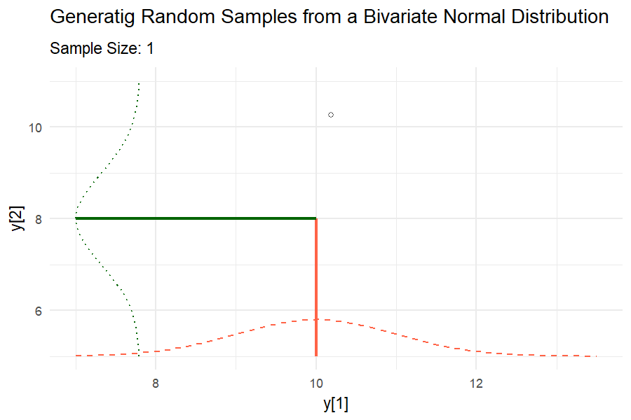
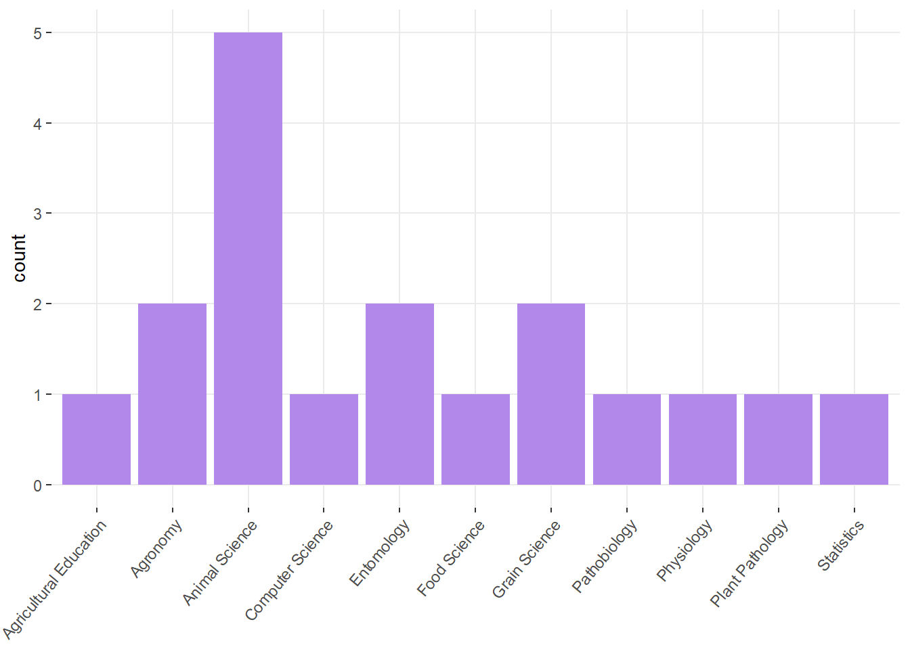

2 Día 1: Introducción y repaso.
5 de octubre de 2026
2.1 Housekeeping
- We will have relatively low proportion of R code in this workshop. Instead, we will focus on the understanding of the components of mixed-effects models. Questions/concerns via e-mail are encouraged.
- Emphasis on modeling and figuring out what mixed-effects models actually do.
- The statistical notation we will use throughout this workshop is presented here.
- DON’T PANIC when you see all the math notation and matrices. We will go slowly together. It is also not expected that you walk out of this workshop as a math notation wizard!
2.2 Linear Models Review
Why do we need statistical models?
Statistics as a summary of the data
Excerpt from the short story “Funes the memorious” (J.L. Borges): I suspect, however, that he was not very capable of thought. To think is to forget differences, generalize, make abstractions. In the teeming world of Funes, there were only details, almost immediate in their presence.
What is a statistical model?
Deterministic component + Stochastic component
2.2.1 Writing a statistical model
Deterministic component + Stochastic component
Example:
\(y_i \sim N(\mu_i, \sigma^2), \\ \mu_i = \beta_0 + \beta_1 x_i\)
2.2.2 What are linear models?
- Assume that \(y_i \sim N(\mu_i, \sigma^2)\).
…and there are 4 possible descriptions of the mean:
- \(\mu_i = \beta_0 + \beta_1 x_{1i} + \beta_2 x_{2i}\)
- \(\mu_i = \beta_0 + \beta_1 x_i + \beta_2 x_i^2\)
- \(\mu_i = \beta_0 \cdot \exp(x_i \cdot \beta_1)\)
- \(\mu_i = \beta_0 + x_i^{\beta_1}\)
What is a linear model and what is not?
2.2.3 Vectorized notation
Model equation form:
- \(y_i = \beta_0 + \beta_1 x_i + \varepsilon_i\)
- \(\varepsilon_i \sim N(0, \sigma^2),\)
Probability distribution form:
Scalar
- \(y_i \sim N(\mu_i, \sigma^2),\)
- \(\mu_i = \beta_0 + \beta_1 x_i\)
Vector
- \(\mathbf{y} \sim N(\boldsymbol{\mu}, \Sigma),\)
- \(\boldsymbol{\mu} = \boldsymbol{1} \beta_0 + \mathbf{x} \beta_1 = \mathbf{X}\boldsymbol{\beta}\)
2.2.4 Vectorized notation - cont.
\[\begin{bmatrix}y_1 \\ y_2 \\ \vdots \\ y_n \end{bmatrix} \sim N \left( \begin{bmatrix}\mu_1 \\ \mu_2 \\ \vdots \\ \mu_n \end{bmatrix}, \begin{bmatrix} Cov(y_1, y_1) & Cov(y_1, y_2) & \dots & Cov(y_1, y_n) \\ Cov(y_2, y_1) & Cov(y_2, y_2) & \dots & Cov(y_2, y_n)\\ \vdots & \vdots & \ddots & \vdots \\ Cov(y_n, y_1) & Cov(y_n, y_2) & \dots & Cov(y_n, y_n) \end{bmatrix} \right)\]
2.3 Review

2.3.2 Mean, Variance
- Mean: the balancing point of a probability distribution
- Variance: dispersion of \(y\)

What do these distributions mean in practice?

2.3.3 Covariance
Covariance between two random variables means how the two random variables behave relative to each other. Essentially, it quantifies the relationship between their joint variability. The variance of a random variable is the covariance of a random variable with itself. Consider two variables \(y1\) and \(y2\) each with a variance of 1 and a covariance of 0.6.
\[\begin{bmatrix}y_1 \\ y_2 \end{bmatrix} \sim MVN \left( \begin{bmatrix} 10 \\ 8 \end{bmatrix} , \begin{bmatrix}1 & 0.6 \\ 0.6 & 1 \end{bmatrix} \right),\]
where the means of \(y_1\) and \(y_2\) are 10 and 8, respectively, and their covariance structure is represented in the variance-covariance matrix. Remember:
\[\begin{bmatrix}y_1 \\ y_2 \end{bmatrix} \sim MVN \left( \begin{bmatrix} E(y_1) \\ E(y_2) \end{bmatrix} , \begin{bmatrix} Var(y_1) & Cov(y_1, y_2) \\ Cov(y_2,y_2) & Var(y_2) \end{bmatrix} \right).\]

2.4 The most common statistical model
\[\mathbf{y} \sim N(\boldsymbol\mu, \boldsymbol\Sigma),\]
where:
- \(\mathbf{y} \equiv [y_1, y_2, \dots, y_n]'\) contains the response data,
- \(\boldsymbol{\mu} \equiv [\mu_1, \mu_2, \dots, \mu_n]'\) contains the expected values of said data,
- \(\boldsymbol\Sigma\) is the variance-covariance matrix.
The most typical model typically has:
- \(\boldsymbol\mu = \mathbf{X}\boldsymbol{\beta}\) and
- \(\boldsymbol\Sigma = \sigma^2\mathbf{I}\).
In summary, the assumptions are:
- Normality
- Independence
- Constant variance
2.4.1 Properties of the general linear model
- \(E(\hat{\boldsymbol{\beta}}) = \boldsymbol{\beta}\)
- \(\text{Var}(\hat{\boldsymbol{\beta}}) = \frac{\sigma^2}{\mathbf{X}^T\mathbf{X}} = \sigma^2 (\mathbf{X}^T\mathbf{X})^{-1}\)
Class discussion:
- What if the observations weren’t independent?
- What if the variance wasn’t constant?
2.5 Uncertainty
Uncertainty will be one of the central topics in this course. Uncertainty is important because, as we summarize the information (e.g., to aviod Funes’ useless excess of information), we can better describe all the information with a combination of the mean and the variance.
2.5.2 Types of uncertainty in the general linear model
Recall \(\mathbf{y} \sim N(\boldsymbol{\mu}, \boldsymbol{\Sigma})\), where \(\boldsymbol{\mu} = \mathbf{X}\boldsymbol{\beta}\), and suppose \(\boldsymbol{\Sigma} = \sigma^2 \mathbf{I}\).
We use the estimator of \(\boldsymbol{\beta}\), \(\hat{\boldsymbol{\beta}}\).
\(Var(\mathbf{y}) = \sigma^2 = \frac{SSE}{df_e}\),
\(Var(\hat{\boldsymbol{\beta}}) = \frac{\sigma^2}{\mathbf{X}^T\mathbf{X}}\), and \(Var(\hat\beta_1) = \frac{\sigma^2}{(n-1)s^2_{x_1}}\).
Discuss the connection between \(n\), \({df_e}\), \(\sigma^2\) and \(Var(\hat{\boldsymbol{\beta}})\).
2.5.3 Uncertainty - applied example
Assume that the model \(y_i \sim N(\mu_i, \sigma^2), \mu_i = \beta_0 + \beta_1 x_i+ \beta_2 x_i^2\) describes the data generating process.
url <- "https://raw.githubusercontent.com/k-state-id3a/mixed-models-fall25/refs/heads/newpart3/data/nitrogen_yield.csv"
df_n_ss <- read.csv(url)
m1 <- lm(Yield_SY ~ Total_N + I(Total_N^2), data = df_n_ss)
DHARMa::simulateResiduals(m1, plot = T)
## Object of Class DHARMa with simulated residuals based on 250 simulations with refit = FALSE . See ?DHARMa::simulateResiduals for help.
##
## Scaled residual values: 0.1 0.3 0.004 0.588 0.792 0.556 0.168 0.344 0.256 0.452 0.388 0.388 0.832 0.94 0.692 0.936 0.132 0.312 0.424 0.664 ...m1 <- lm(Yield_SY ~ Total_N + I(Total_N^2), data = df_n_ss)
df_plot <- data.frame(Total_N = 0:280)
df_plot$yhat <- predict(m1, newdata = df_plot)
# estimation uncertainty
confid_est <- predict(m1, newdata = df_plot, se.fit = TRUE, interval = "confidence")
df_plot$est_low <- (confid_est$fit)[,2]
df_plot$est_up <- (confid_est$fit)[,3]
# estimation uncertainty
confid_pred <- predict(m1, newdata = df_plot, se.fit = TRUE, interval = "predict")
df_plot$pred_low <- (confid_pred$fit)[,2]
df_plot$pred_up <- (confid_pred$fit)[,3]df_plot |>
ggplot(aes(Total_N, yhat))+
geom_ribbon(aes(ymin = pred_low, ymax = pred_up),
alpha = .3, fill = "#B388EB")+
geom_ribbon(aes(ymin = est_low, ymax = est_up),
alpha = .6, fill = "#B200EB")+
geom_line()+
labs(y = latex2exp::TeX("$\\hat{y}$"),
x = expression(Total~N~(lb~ac^{-1})))+
theme_pubclean()